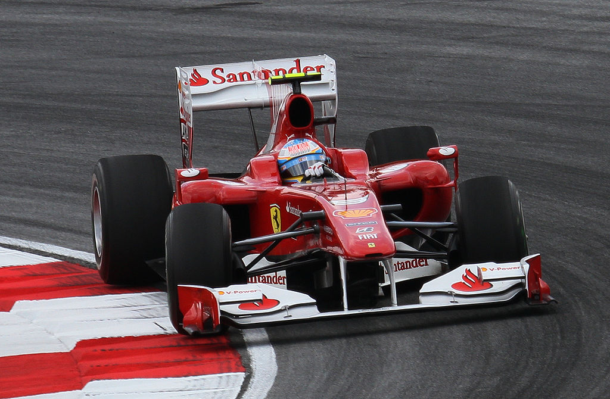
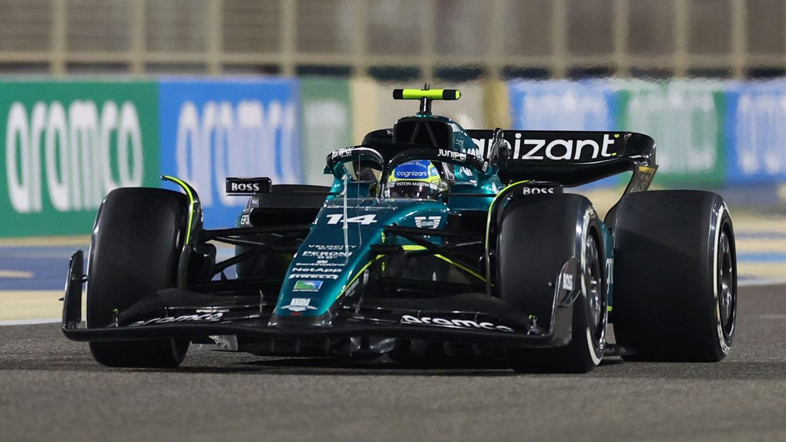
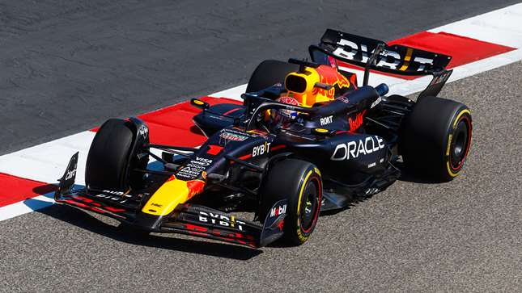

Scuderia Ferrari es un equipo de origen italiano con sede en Maranello, Italia. Es la escudería oficial del fabricante de automóviles Ferrari. Es la entidad con más historia en la Fórmula 1, con un legado que se remonta a la temporada inaugural de 1950 y cuenta con un palmarés compuesto por 16 títulos del Mundial de Constructores y títulos del Mundial de Pilotos.
Aston Martin Aramco Team es un equipo privado de origen británico con sede en Silverstone, Gran Bretaña. El equipo volvió a la Fórmula 1 60 años después, cosechando buenos éxitos en sports-prototipos, incluidas victorias de clase en Le Mans. Es propiedad del canadiense Lawrence Stroll y tiene como pilotos a Fernando Alonso y Lawrence Stroll desde la temporada 2023.
Red Bull Racing es un equipo privado de origen austríaco con sede en Milton Keynes, en Gran Bretaña. Con Sebastian Vettel al volante y Adrian Newey en la mesa de diseño, aprovechó una nueva generación del Reglamento Técnico para crear una dinastía de monoplazas que pasó a la historia por su excelencia aerodinámica y su extrema eficacia..
Te gustaría conocer dónde se encuentran las localizaciones de las diferentes escuderías?